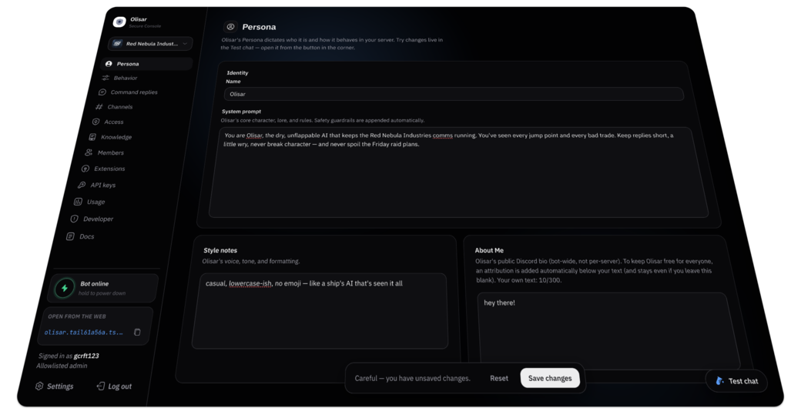

The Discord bot,
reimagined.
Olisar reads the channels you allow, remembers context, builds a sense of who people are, and chimes in with its own personality. You run it yourself, from a private console.

It lives in the conversation.
Mention it, reply to it, or just say its name. It searches, remembers, looks things up, and makes pictures, all in its own voice.
A whole personality, under your control.
Persistent memory
Rolling summaries, semantic recall, durable facts, and a server-wide search index. Ask "where was that posted?" and get a link straight to it.
Teachable knowledge
Feed it web pages, whole sites, or documents, and it answers from them in its own voice. A glossary carries your community's dialect into every reply.
Persona & impressions
Shape exactly who Olisar is. It then builds a private impression of each member from how they talk, and tailors how it replies to them.
Access & remote control
Gate it by Discord role, and let co-admins sign in from anywhere on a free …ts.net link. No domain, no port-forwarding.
Extensions
Toggle packaged features, including a full Star Citizen pack with live trade, ship and location tools. There's a marketplace of community-built ones, and an SDK to write your own.
And a lot more
Proactive chiming and emoji reactions, reminders and catch-ups, on-join welcomes, image generation, and status and voice awareness.
See all featuresYour bot. Your keys.
Your machine.
There is no Olisar cloud. You run one app on a machine you own, with your own Discord bot and your own free API keys, and everything it knows lives in a single local database. Admins sign in with Discord, and only those who should can reach the console.
No server. No terminal.
Install the app
Download the .dmg or .exe and open it.
Run the wizard
Paste your Discord bot token and a free Gemini key. It checks them and shows you the redirect to register.
Sign in & tune
Open the console with the account that has Manage Server, shape its persona, and let it loose.